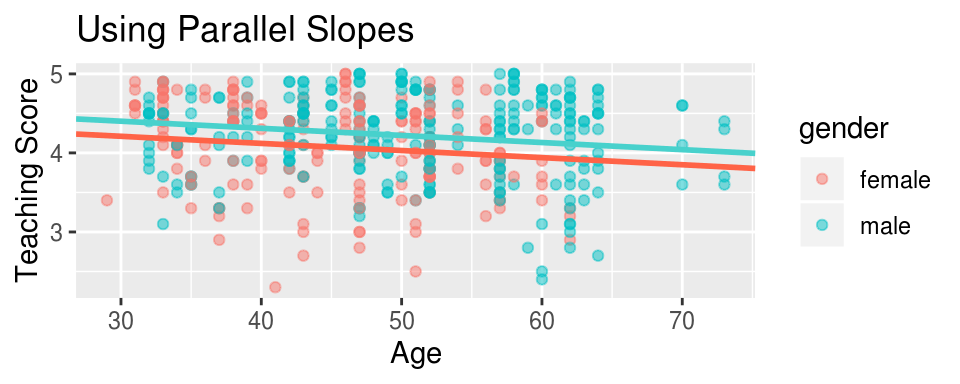

score_model_ch7 = lm(score ~ age + gender, data = evals_ch7)
#score_model_ch7
#get_regression_table(score_model_ch7)Full: \(\hat{Score} = 4.48 - 0.009 \cdot age + 0.191 \cdot 1_{Male}(x)\)
Male: \(\hat{Score_M} = 4.671 - 0.009 \cdot age\)
Female: \(\hat{Score_F} = 4.48 - 0.009 \cdot age\)
ggplot(data = evals_ch7, mapping = aes(x = age, y = score, color = gender)) +
geom_point(alpha = 0.5) +
labs(x = "Age", y = "Teaching Score", title = "Using Parallel Slopes") +
geom_abline(intercept = 4.48, slope = -0.009, color = "tomato", lwd=1) +
geom_abline(intercept = 4.671, slope = -0.009, color = "mediumturquoise", lwd=1)
Interpretaions of the coefficients: